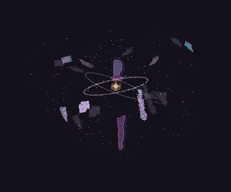

Aru, in fragments
Eight separate wings. A flickering body and heart. Individually tumbling shards and drifting dust. Every part is available in three animation variations, alongside three flattened character loops.

The complete loop
Full rotations and curved dust trails; wings return in irregular flashes.
64 frames · 5.12 seconds · 384 × 320 per frame
Download the complete packBuild with the individual pieces
30 components × 3 variations = 90 sprite sheets. Each component has 32 frames at 80 ms per frame. The variation selector changes all previews below.